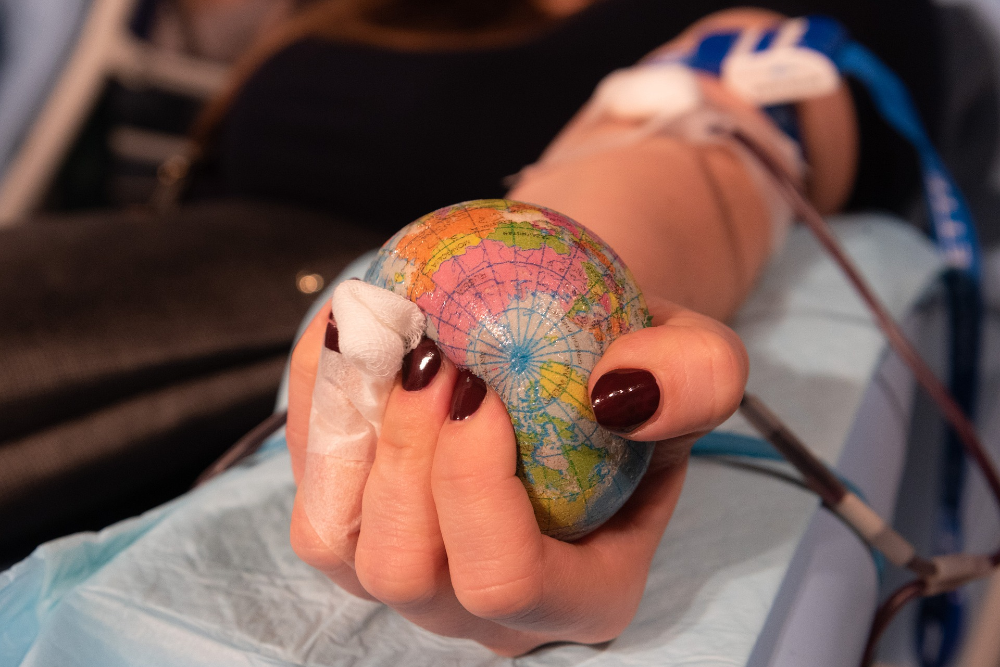

Blood cannot be manufactured – it can only come from generous donors.
Type O-negative blood (red cells) can be transfused to patients of all blood types.
It is always in great demand and often in short supply.
Type AB-positive plasma can be transfused to patients of all other blood types.
AB plasma is also usually in short supply
- 
Blood donations in India are conducted by several organizations and hospitals by organizing blood donation camps.
Donors can also visit blood banks in hospitals to donate blood or directly to a receiver.
Despite the shortage of donated blood, efforts by the government and various organizations have
led to a decrease in the demand and supply gap over the years.
The number of voluntary blood donors increased from 54.4% in 2006–2007 to 83.1% in 2011–2012, with the number of blood units increasing from 4.4 million units
in 2006–2007 to 9.3 million units in 2012–2013.